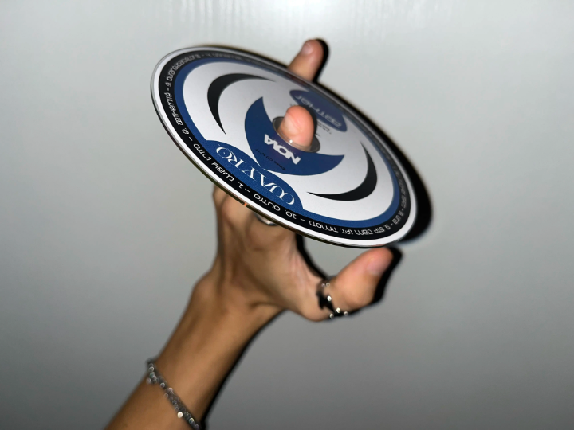
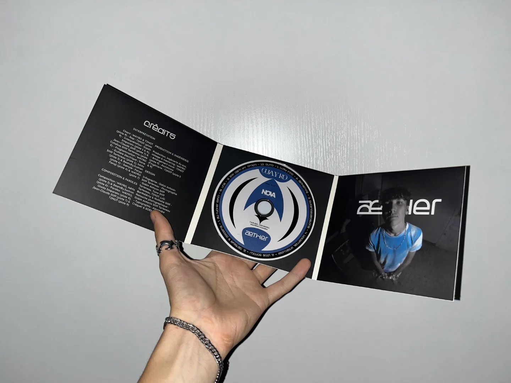

Présentation
De la musique à l'objet.
Æther est ma mixtape sortie le 21 juin 2025 sous le nom WAYRO. J'ai voulu lui donner une dimension physique et collector en concevant un CD accompagné de son boîtier. Les visuels sont issus de photographies que j'ai réalisées moi-même. Ce projet est l'aboutissement d'un travail artistique complet, mêlant musique et direction visuelle.

Matériel & outils
De l'écran au physique.
Design sur Adobe Illustrator pour le design principal et Adobe Photoshop pour la retouche et les éléments visuels complémentaires. Le boîtier CD a été fabriqué par CDClick, entreprise italienne spécialisée dans la production de supports physiques.

Résultat
